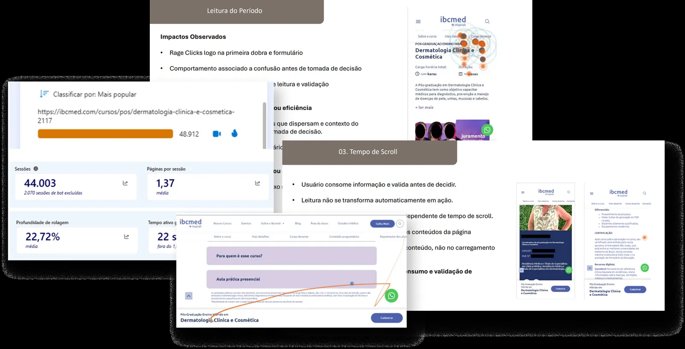
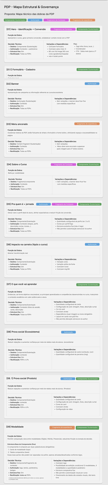
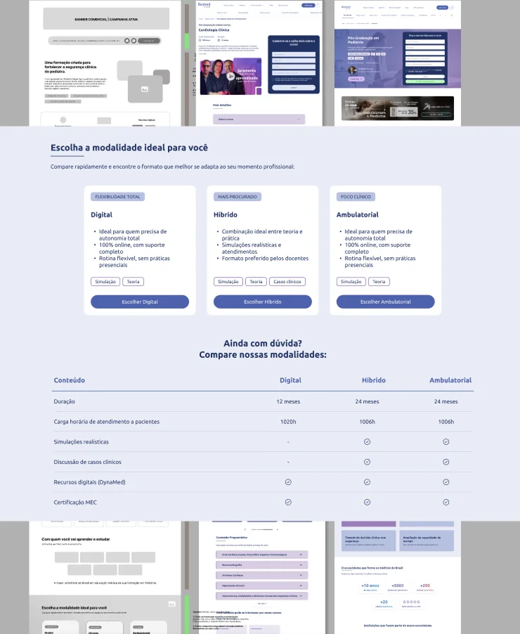

O PROBLEMA
NÃO ERA O CTA.
Diagnóstico comportamental via Microsoft Clarity e reestruturação da PDP do IBCMED, do discovery ao handoff com produto e tecnologia.
Contexto
A página de decisão da jornada.
A PDP era onde o usuário avaliava valor, reduzia risco e buscava clareza antes de enviar o formulário de interesse. A estrutura existente era genérica: modalidades diferentes geravam páginas separadas e informações essenciais ficavam escondidas em uma sequência de sanfonas.
Problema
Tráfego relevante. Conversão que não correspondia.
Antes de redesenhar, a prioridade foi entender o comportamento real. A hipótese inicial apontava para o CTA, mas os dados mostraram outro problema.
Meu papel
Do comportamento ao handoff.
- Análise de 90 dias no Microsoft Clarity, separando mobile e desktop.
- Diagnóstico de scroll, cliques, rage clicks, dead clicks e padrões recorrentes.
- Discovery, mapa de objeções e user flow da nova PDP.
- Handoff e acompanhamento com Produto e Tecnologia.
- Implementação de parte das mudanças diretamente no AEM.
Evidência
Validação e ação são comportamentos diferentes.
Scroll e leitura foram tratados como microconversões. Isso revelou dois padrões recorrentes:
Já decidido
Vai rapidamente ao formulário e converte cedo. O site executa uma decisão que, em grande parte, já estava tomada.
Em validação
Lê mais, percorre a página e procura informações como público, aulas práticas e corpo docente antes de decidir.
A oportunidade estava em conduzir melhor o segundo perfil do “entendi” para o “quero fazer”.

Decisões
O redesign nasceu do diagnóstico.
Decisão por evidência comportamental.
Menos páginas, vitrine mais limpa e manutenção mais simples.
Conteúdo direto e escaneável para apoiar validação.
Conduzir explicitamente validação → ação.
Medir leitura e scroll, não somente o formulário.
Governança e reutilização entre cursos.

Entregas
Do insight para algo operável.
- Análise comportamental priorizada.
- Mapa de objeções e user flow.
- Estrutura final da nova PDP.
- Mapa de governança de componentes.
- Handoff com Produto e Tecnologia.
- Implementação parcial em AEM.
Impacto
Do “CTA não converte” para o problema certo.
O redesign passou a ser orientado por evidência, consolidou modalidades em uma única estrutura e transformou a PDP em um sistema de componentes reutilizável. A proposta foi aprovada pela diretoria e chegou à produção.

Aprendizado
O valor não estava em redesenhar uma tela.
O principal aprendizado foi traduzir comportamento em decisão de produto: entender a jornada antes de alterar a interface evitou otimizar o elemento errado e criou uma solução mais governável para produto, conteúdo e tecnologia.